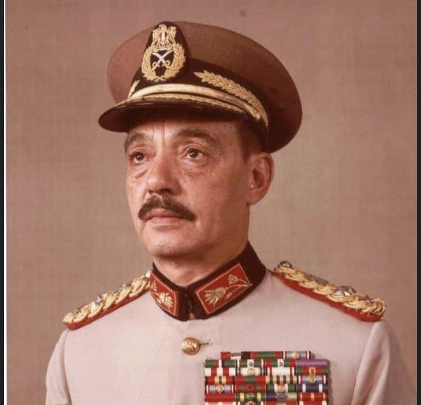
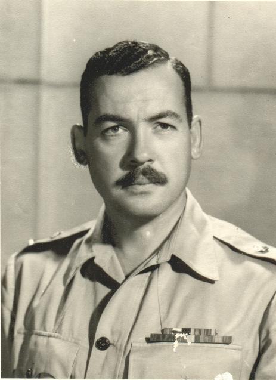
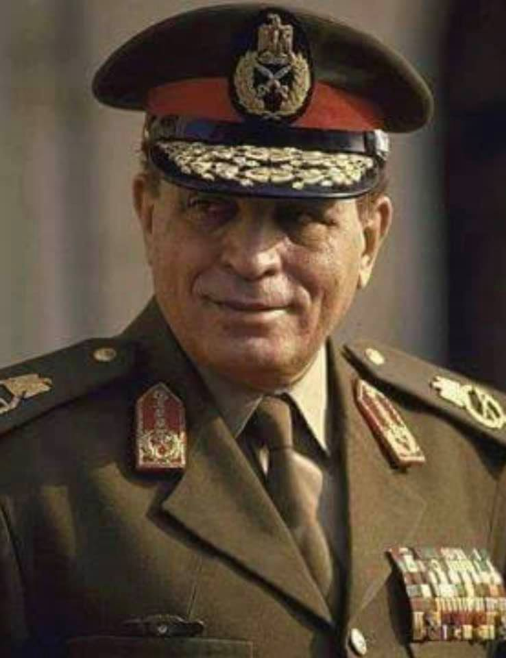
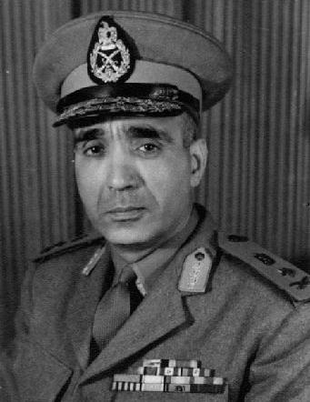
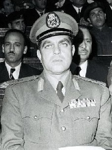
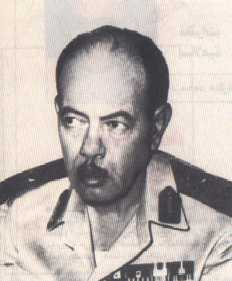
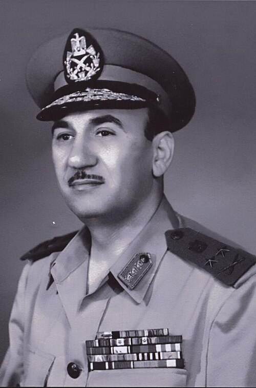

رئيس الجمهورية والقائد الأعلى للقوات المسلحة
محمد أنور السادات
اتخذ قرار الحرب وحدد موعدها بالتنسيق مع سوريا. وبعد الحرب اتجه إلى المفاوضات، التي انتهت بتوقيع معاهدة السلام عام ١٩٧٩.
السادس من أكتوبر ١٩٧٣
تعرف على أبرز القادة الذين أسهموا في التخطيط لحرب أكتوبر وإدارتها.
اكتشف القادةرجال صنعوا التاريخ
أدوار قيادية مختلفة اجتمعت في التخطيط والاستعداد وإدارة معركة العبور.
رئيس الجمهورية والقائد الأعلى للقوات المسلحة
اتخذ قرار الحرب وحدد موعدها بالتنسيق مع سوريا. وبعد الحرب اتجه إلى المفاوضات، التي انتهت بتوقيع معاهدة السلام عام ١٩٧٩.

وزير الحربية والقائد العام
تولى وزارة الحربية والقيادة العامة للقوات المسلحة قبل الحرب بنحو عام، وأشرف على الإعداد والتدريب وإدارة العمليات.

رئيس أركان حرب القوات المسلحة
شارك في تطوير خطط العمليات وإعداد القوات للعبور، وسجل تجربته وشهادته عن الحرب في مذكراته.

رئيس هيئة عمليات القوات المسلحة
وضع التوقيت المناسب للهجوم.

قائد عمليات وعضو قيادي في حرب أكتوبر
من الشخصيات العسكرية البارزة التي ساهمت في تخطيط وتنفيذ العمليات، وبرز دوره في دعم تنفيذ الرؤية القتالية لجيش مصر.

القائد العسكري والسياسي البارز
كان من قادة الجيش المصري الذين لعبوا دورًا كبيرًا في إعادة بناء القوات المسلحة وتحضيرها لاستعادة الأرض، وترك بصمة واضحة في تاريخ النصر.

وزير الحربية ورئيس أركان حرب القوات المسلحة
من أبرز القادة المصريين الذين أسهموا في إعداد الجيش لمرحلة الاستعداد للحرب، وترك بصمة قوية في طريق النصر وتحصين الجبهة المصرية.

قائد عسكري بارز في حرب أكتوبر
شارك في التخطيط والتنفيذ العسكري خلال مرحلة العبور، وكانت مساهماته في إدارة المعارك جزءًا من الجهد الذي حقق نجاحات تاريخية للقوات المسلحة.

قائد عسكري في الجبهة المصرية
من القامات العسكرية التي أسهمت في تنظيم الجبهة ورفع جاهزية القوات، وبرز دوره في دعم تنفيذ الخطة العسكرية التي أدت إلى التقدم والإنجاز.

قيادي عسكري في القوات المسلحة
كان من القادة الذين ساهموا في تحضير القوات وإدارتها خلال المرحلة الحاسمة، وقدرته على القيادة والالتزام كانت جزءًا من صناعة النصر في أكتوبر.